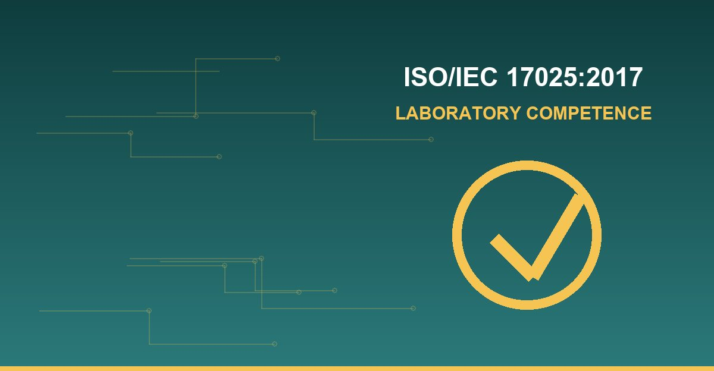

ISO/IEC 17025 电池检测实验室认可指南
ISO 9001 说明实验室有质量体系；ISO/IEC 17025 说明实验室的结果具备技术能力。客户、监管机构与OEM对电池测试数据越来越要求后者——因为从未溯源校准的充放电设备产出的数字看着正常却毫无意义。本文把标准条款映射到电池实验室的日常现实。

17025 与 ISO 9001：能力而不只是流程
ISO 9001 认证组织持续管理质量。ISO/IEC 17025 更进一步，认证实验室产出技术上有效的结果：设备以文档化溯源完成校准、方法经过验证、人员对所执行的特定测试具备能力、报告结果附带不确定度陈述。对电池实验室，区别在于"我们测了100只电芯到2000次循环"与"我们测了100只电芯到2000次循环，容量测量溯源至国家基准，扩展不确定度 ±0.5%"。
对电池实验室最重的几个条款
6.4（设备）与6.5（计量溯源）工作量最大。每台充放电设备、试验箱、振动台与测量仪器都需要以漂移历史而非习惯确定周期的校准程序。充放电设备需在工作范围内对电压与电流双参数校准——多通道系统还必须验证通道间一致性。试验箱需在加载夹具状态下做均匀性分布，并以独立验证传感器比对主控制器。
7.2（方法验证）对执行客户定制或内部开发程序的实验室最严格：任何对已发布标准的偏离都必须以客观证据验证。7.6（测量不确定度）要求对报告量——容量、阻抗、温度——建立预算，计入设备精度、接触电阻、温度系数与采样分辨率。
把溯源融入日常工作
溯源是一条连到国家计量院的校准链，每一环都有文档。实操上：维护设备台账并在工位可见校准状态；隔离超期仪器并评估其超期期间产生的数据；用中间核查——每周用稳定的标准电芯或精密电阻比对——在年度校准之间捕捉漂移。中间核查成本低，却是最能让评审员信服实验室理解自身仪器的证据。
人员与能力的人的维度
17025 要求为每个触及结果的岗位建立文档化能力：授权矩阵、培训记录、以及"理解"而非"出席"的证据。对电池实验室，敏感岗位是热电偶粘贴（贴附不良直接使热数据失效）、夹具设计与数据复核。每个关键岗位至少交叉培训两人，让能力扛得过休假和人员流动。
审核实操准备
评审员顺着数据走。任选一份近期报告，走通它的完整历史：客户委托、样品接收、方法选择、所用设备（含当日校准状态）、原始数据、计算、不确定度预算、批准与交付。任何一份报告都能端到端还原的实验室能通过审核；靠现场回忆拼凑的不行。每半年内部演练一次，轮换测试类型——环境、电气、滥用。
检查清单
- ✓设备台账实时显示校准状态，周期有依据。
- ✓充放电设备电压与电流双参数校准，含通道间核查。
- ✓试验箱均匀性按加载状态分布，每年复测。
- ✓每个报告量都有不确定度预算，不只容量。
- ✓每周用标准电芯或精密标准做中间核查。
- ✓每半年一次全链路模拟审核。